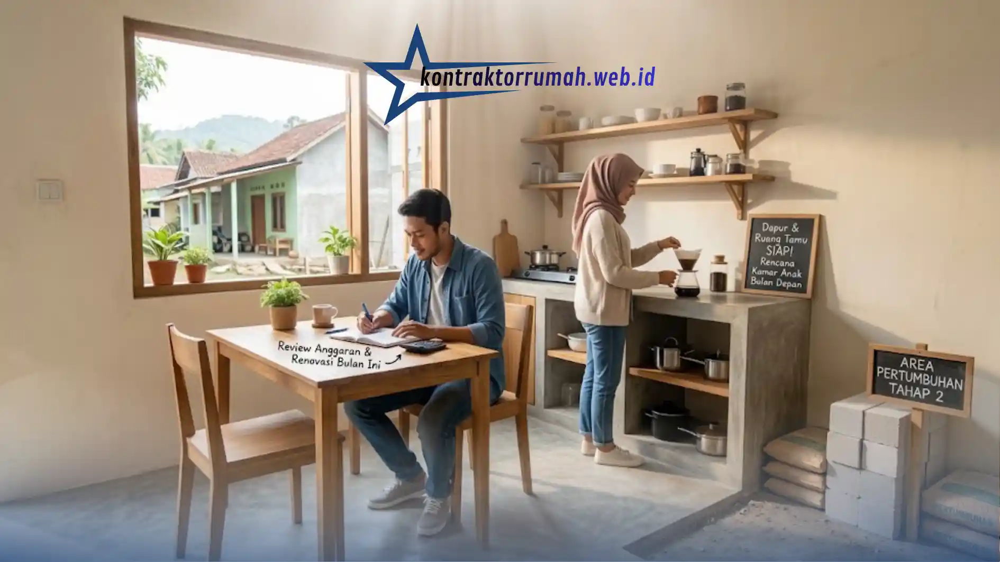

Membangun rumah impian dari nol memang membutuhkan biaya yang tidak sedikit, tetapi bukan berarti biayanya tidak bisa dikendalikan. Sebagai pemula, Anda wajib memahami strategi mengenai cara menghemat budget bangun rumah agar dana yang telah disiapkan tidak membengkak di tengah proses konstruksi.
Poin Penting
- Susun RAB detail dengan dana cadangan 10-15% untuk mengantisipasi kenaikan harga atau kebutuhan tak terduga.
- Bentuk bangunan sederhana (persegi/persegi panjang) lebih hemat bahan baku dan mempercepat pengerjaan.
- Konsep rumah tumbuh memungkinkan Anda huni rumah lebih cepat tanpa menunggu seluruh dana terkumpul.
- Bandingkan harga material dari minimal tiga supplier berbeda sebelum membeli dalam volume besar.
- Sistem borongan lebih hemat dan efisien waktu jika gambar kerja dan spesifikasi material sudah jelas sejak awal.
Perencanaan yang matang sejak awal adalah kunci utama agar proyek pembangunan berjalan sesuai anggaran. Berikut panduan lengkap yang bisa Anda terapkan.
Buat RAB (Rencana Anggaran Biaya) yang Detail
RAB berfungsi sebagai kompas keuangan selama proses pembangunan. Catat seluruh kebutuhan material, upah pekerja, biaya perizinan, hingga dana darurat secara rinci. Idealnya, sisihkan sekitar 10-15% dari total anggaran sebagai dana cadangan untuk mengantisipasi kenaikan harga material atau kebutuhan tak terduga di lapangan.
Dengan RAB yang jelas, Anda juga lebih mudah memantau apakah pengeluaran aktual masih sesuai rencana atau sudah melampaui batas.
Pilih Bentuk Bangunan yang Sederhana
Bentuk denah rumah persegi atau persegi panjang jauh lebih hemat bahan baku dan biaya pengerjaan dibandingkan desain dengan banyak sudut, lekukan, atau struktur rumit. Bentuk sederhana juga mempercepat waktu pengerjaan karena tukang tidak perlu melakukan banyak penyesuaian pada setiap sudut bangunan.
Terapkan Konsep Rumah Tumbuh
Bangun struktur utama dan ruangan inti yang paling dibutuhkan terlebih dahulu, seperti kamar tidur, kamar mandi, dan dapur. Anda bisa melanjutkan pembangunan ruang tambahan seperti garasi atau kamar ekstra secara bertahap saat dana sudah kembali terkumpul.
Konsep ini memungkinkan Anda memiliki rumah layak huni lebih cepat tanpa harus menunggu seluruh dana terkumpul sekaligus.

Konsep rumah tumbuh memungkinkan rumah layak huni lebih cepat tanpa menunggu seluruh dana terkumpul sekaligus.
Survei Harga Material dari Beberapa Toko
Jangan terpaku pada satu toko bangunan saja. Bandingkan harga material dari minimal tiga supplier berbeda, termasuk mempertimbangkan biaya pengiriman. Selisih harga yang terlihat kecil per item bisa menjadi cukup besar jika dikalikan dengan volume material yang dibutuhkan untuk satu rumah.
Manfaatkan Tenaga Kerja Borongan dengan Bijak
Sistem borongan (upah berdasarkan progres pekerjaan, bukan harian) seringkali lebih hemat dan efisien waktu dibandingkan sistem harian, asalkan Anda sudah memiliki gambar kerja dan spesifikasi material yang jelas sejak awal untuk menghindari selisih pemahaman dengan tukang.
Catatan dari tim Kontraktor Rumah: Menghemat budget bangun rumah bukan berarti mengorbankan kualitas, melainkan soal perencanaan yang cermat dan pengambilan keputusan yang tepat di setiap tahap. Dengan menyusun RAB yang detail, memilih bentuk bangunan sederhana, menerapkan konsep rumah tumbuh, serta membandingkan harga material, Anda bisa mewujudkan rumah impian tanpa harus menguras seluruh tabungan sekaligus.
FAQ Seputar Cara Menghemat Budget Bangun Rumah
Setelah RAB dan strategi hemat sudah Anda susun, langkah selanjutnya adalah memastikan Anda menggandeng kontraktor yang transparan dan berpengalaman agar rencana anggaran tetap terkendali sampai rumah selesai dibangun. Konsultasikan kebutuhan proyek Anda bersama tim kami sekarang.